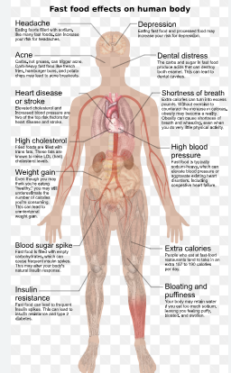

Today, eating processed foods and fast foods may kill more people prematurely than cigarette smoking. In America 71 percent of Americans are obese or overweight. fast food is bad for you because 1
Fast food is bad for you because of many reasons: obesity, insulin resistance, type 2 diabetes, and various cardiovascular conditions. This is because most fast food is high in sugar, salt, saturated fat, trans fats, processed ingredients, and calories. It is also generally low in antioxidants
Fast Food's Effects on 8 Areas of the Bodyfoods that rapidly vanish or 'melt in your mouth' signal to your brain that you're not eating as much as you actually are. also because of all the artificial sweeteners sugar carbohydrates etc make your brain crave it much more even though it is very unhealthy for you
it can increase heart disease and stroke sit can cause high cholesterol which is extremely unhealthy for you well all of these are and some bad life prob;llems will also be short breath and blood sugar spikes bloating a puffiness and you will gain diabetes and that will shorten your lifespan and you will have to take insulin